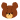

| 2012/03 04 Sun | ひめたん(*ゝω・*)ノその97 |
全国握手会inよみうりランド
無事終わりました(^ω^)
行けないよーて応援してくださっていた方、ありがとうございました。
来て下さった方、ライブ・握手会それぞれ感想聞かせてください♪
朝は野外ライブ。ひめたんなりの振り返り。
-ぐるぐるカーテン-
れなりん
(市来玲奈chan)のアンダーとして出演させていただきました。
れなりん
の分まで楽しんで踊ったつもりです(*^^*)
自分たちの表題曲をうたうのがこんなにも誇らしいことかと思うと
もっと自分も頑張んなきゃなって!
-左胸の勇気-
ということで左胸初披露。
アンダーメンバーのぱわふるな感じが、歌やダンスで表現できたかしらー?
みんな早く左胸を見てほしくて、うずうずしてたの(>_<)
あんなに広いステージでパフォーマンスできて感動しましたー!!!
ユニフォームもいいしょー。早替えだったから写真撮れなかったの←
いつか写メ撮るね!
-会いたかったかもしれない-
こちらも
れなりん
のアンダーとして。
ひめたん激しいダンスが好きだから、
会いかも
大好きなのほんとに♪♪
ひめたん的に
会いかも
もお客さんの前で踊ったのは初めてかもしれない。
ローファーでつるってなったのはここだけの話(ω)←
-乃木坂の詩-
会場中が一体化!
おんなじ動きしてくださってるの、ステージからみててきれいでしたよ＼(^^)／★
玲香
せんせい(桜井玲香chan)のレクチャーのおかげと、優秀なみなさんのちからですね♪
乃木詩は私たちのテーマソングと言える曲。みなさんと一緒に作っていけて嬉しい!
この4曲に出させていただきました。
-握手会-
かなりん
(中田花奈chan)ふぁんのみなさん温かく迎えてくださって
ありがとうございました!
かなりん
の次で全然いいから、いや3番目でも4番目でも
ひめたん
のこと好きになってくれたら嬉しいな(
*
/ω＼
*
)
そしてひめきゅんのみなさん!
初めましての方も
お久しぶりの方も
一週間ぶりの方も、
会いに来てくださってありがとう!!!
コメ返で会話してて実際に会ってみると「ああこんな声してるんだ(^^)」とか
いろいろ発見できて楽しいっ♪
ピンクの服、めっちゃきゅんきゅんしたっ(
o
>ω<
o
)!
今日は寒かったからね。風邪ひかないよう暖まって寝ましょうね(。・x・。)ノ
そして
かなりん
ありがとう!
ひめたん
だって中田ふぁんの方に負けないくらいかなりん好きだもんっ。
かなりんふぁんの方は幸せですね。
ふぁんの方の気持ちもわかってるかなりんだからこそ
どんな話をしても楽しいしまた握手したくなるし!
今日もたくさんのこと吸収して、ちょっと反省もして、
でも会いに来てくださった方と仲良くなれて嬉しいし
いつか会う時のために一歩ステップアップできたかなと思ってます。
聞き飽きたフレーズかもだけど
ひめたん
は歌うこと踊ることが大好きだから
これからも、自分磨きはもちろんだけど
パフォーマンスにも磨きをかけていこうって改めて思いました!
らいぶ最高ーっ(^O^)

 3月3日、僕誕生日なんだけど...ひめたんに祝ってほしかった!
3月3日、僕誕生日なんだけど...ひめたんに祝ってほしかった!
お誕生日おめでとう!
幸せな1年になりますように...☆
おひな祭りの日なんて素敵ですね(^^)!
どんな誕生日を過ごしましたか??
 最近ハマっている髪型とかありますか(*^ω^*)?
最近ハマっている髪型とかありますか(*^ω^*)?
やっぱりハーフアップかな。
今日もハーフアップしたよ!写真のやつ〜♪
どうしてそんなに可愛いの?
ええー可愛くない
ひめたん
に聞いちゃうー('・ω・`)?
ひめたん
も可愛くなりたいの!いっしょにおんなのこ極めよー☆
 富山弁は何か覚えましたかー?
富山弁は何か覚えましたかー?
富山弁!
この前富山県民からあんまり富山弁聞けなかった...。
富山弁教えて下さいっ!
ひめたんって何人兄弟?
姉さん1人に妹1人の3姉妹(ω)♪
3姉妹の真ん中っ子は大変ですよ??伝わらないかなあ。
 ひめたんの好きな色とかキャラクター教えてほしいな(*^_^*)
ひめたんの好きな色とかキャラクター教えてほしいな(*^_^*)
好きな色はぴんく!
パステルカラー系は何でも可愛いと思うけど、一色選ぶならぴんくかな。
好きなキャラクターはジャッキー

!
広島のいいところは?
ひめたんが広島でオススメするものはなに?
広島県民はみんなあったかい!
メンバーからは
ひめたん
も
まあや
(和田まあやchan)も歩くの遅いて言われるけど
やっぱりのんびりしとるんかな(ω)
オススメは揚げもみじ。ほんま美味しいけ、ぜひ食べて帰ってください!!
(*´・ω・*)ひめたん
コメント(112)
2012/03/04 01:00